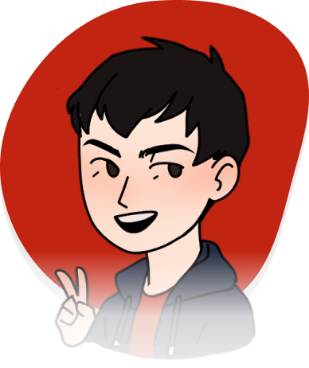

<section id="body" class="flex js-center">
  <div class="container">
    <header class="flex js-bet al-center">
      
      <nav class="flex al-center">
        <a href="#Home" class="home-header">Home</a>
        <a href="#projetos">Contribuições</a>
        <a href="#sobremim">Sobre mim</a>
        <a href="#experiencias">Experiências</a>
        <a href="#contatos">Contatos</a>
      </nav>
      <a href="" class="button-header flex al-center" target="_blank"
        >Currículo </a>
    </header>

    <section id="home" class="flex al-center">
      <div class="left flex col">
        <h6>Olá! Eu sou</h6>
        <h4>Lucas Tamura</h4>
        <div class="">
          <h1>Desenvolvedor</h1>
          <div class="flex">
            <h1>Front-end</h1>
            <span class="dot-home">.</span>
          </div>
        </div>
        <h6>
          A busca por novos horizontes te leva a caminhos intencionais com
          descobertas incríveis.
        </h6>
        <div class="flex icons-social">
          
          
          
          
        </div>
      </div>
      
    </section>

    <section id="sobremim" class="flex js-center full-w col al-center">
      <div class="flex al-center">
        <h2>Sobre mim</h2>
        <h2 class="red">.</h2>
      </div>
      <p>
        Sou Lucas Tamura, um entusiasta de Big Data formado pela Fatec - Pompéia
        com experiência em desenvolvimento front-end. Atualmente, estou ansioso
        para expandir meus horizontes e mergulhar em novas áreas do mundo do
        desenvolvimento. Meu objetivo é aprimorar minhas habilidades técnicas e
        adquirir conhecimento em diferentes domínios para me tornar um
        profissional ainda mais versátil.
      </p>
    </section>

    <section id="projetos" class="flex js-center full-w col al-center">
      <div class="flex al-center">
        <h2>Projetos</h2>
        <h2 class="red">.</h2>
      </div>
      <p>
        Compartilhando um pouco das experiências e projetos desenvolvidos...
      </p>
      <p-carousel
        [value]="products"
        [numVisible]="3"
        [numScroll]="3"
        [circular]="false"
        [responsiveOptions]="responsiveOptions"
      >
        <ng-template let-product pTemplate="item" class="flex js-center ">
          <app-card-projects
          class="flex js-center al-center full-h cards-carrocel"
            [img]="product.img"
            [title]="product.title"
            [description]="product.description"
            [link]="product.link"
            [skill]="product.skill"
          ></app-card-projects>
        </ng-template>
      </p-carousel>
    </section>

    <section id="experiencias" class="flex js-center full-w col al-center">
      <div class="flex al-center">
        <h2>Experiências</h2>
        <h2 class="red">.</h2>
      </div>
      <p>Um pouco das empresas que pude contribuir...</p>
      <div class="logos flex al-center">
        
        
        
        
      </div>
    </section>

    <section id="contatos" class="flex js-center full-w col al-center">
      <div class="full-w flex col al-center">
        <div class="flex al-center">
          <h2>Contatos</h2>
          <h2 class="red">.</h2>
        </div>
        <p>
          Será um prazer me apresentar com mais detalhes e compartilhar as
          experiências que adquiri ao longo do minha carreira profissional.
        </p>
      </div>
      
      <div class="flex icons-social">
        
        
        
        
      </div>
      <p>2024 Lucas Tamura</p>
    </section>
  </div>
</section>
